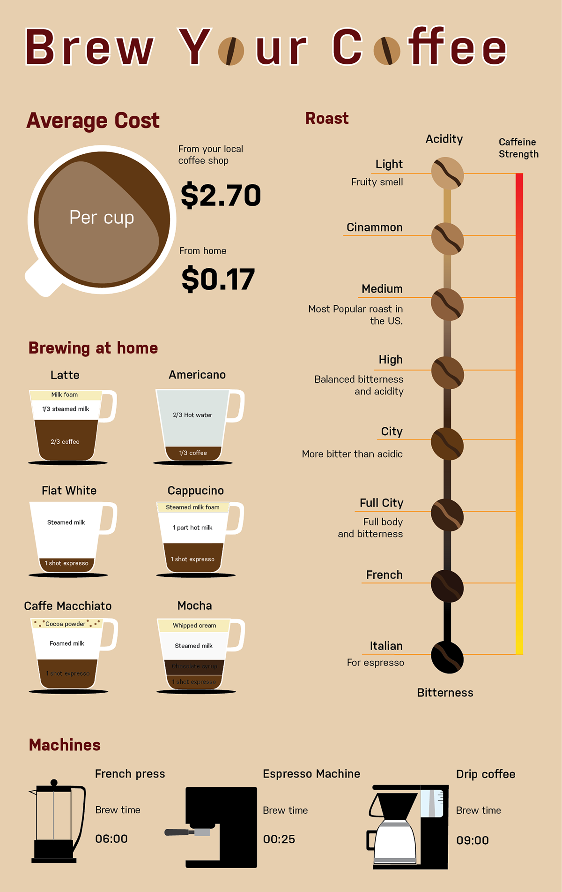
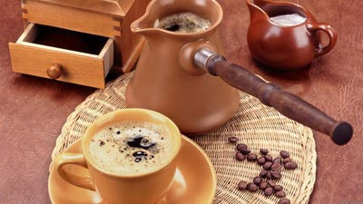

Рецепты кофе
Brew Your Coffee (Инфографика)
Стандартный кофе
Хорошо ополосните кофейник крутым кипятком и всыпьте в него половину приготовленной порции кофейного порошка. Залейте порошок кипятком и плотно закройте кофейник. Минуты через две всыпьте оставшийся порошок и долейте воду до необходимой пропорции. Подогревайте кофейник, на медленном огне, но не доводите кофе докипения. Минут через пять кофе готов.
Соотношение между количеством воды и кофейного порошка обычное: 10 – 12г кофейного порошка на 180г воды, т.е. 1 – 2 чайные ложки порошка на стакан воды. Следует заметить, что в разных странах придерживаются несколько разных пропорций. Указанное соотношение характерно для западноевропейских стран, в латиноамериканских странах концентрация кофе более высокая, и совсем крепкий напиток предпочитают жители Востока.
Кофе по-восточному
Кофейные зерна размалывают в очень тонкий порошок. Берут джезву нужного размера (на одну, две, четыре порции). Кладут туда сахар и наливают свежую воду. После того как вода закипит, добавляют кофейный порошок. Поднимается пена. Кофе дважды или трижды подогревают, не доводя до кипения.
Пропорция такая: на 50 – 60г воды (маленькая кофейная чашечка) один кусочек быстрорастворимого сахара и полная чайная ложка кофейного порошка. Если очень сладкий кофе вам не по вкусу, сахара можно положить меньше или ограничиться щепоткой только для смягчения воды.
Кофе с молоком
Готовят тем способом, который вы предпочитаете, а затем добавляют в него молоко. Пропорция зависит от вкуса, чаще всего кофе и молоко смешивают в равных количествах. Итальянцы добавляют еще щепотку тонко размолотой корицы
Мраморный кофе
Это не только вкусный, но и красивый кофе с молоком. Готовят его так: теплое молоко в небольшом количестве наливают только на дно кофейной чашки, a затем осторожно добавляют кофе. Перемешивать напиток не надо.
Кофе с лимоном
И в этом случае все очень просто. К чашке кофе подают ломтик лимона и сахар. В место лимона можно подать в тарелочке мелко накрошенную лимонную корку.
Итальянский кофе-капуцино
Вот еще один простой рецепт кофе с молоком. Вначале готовят обычным способом очень крепкий экспресс-кофе. Затем в кофеварку наливают такое же количество молока и прогоняют его через кофеварку так же, как и обычный кофе. Напиток разливают в чашки и слегка присыпают шоколадной пудрой. Не забудьте хорошо вымыть кофеварку (лучше сделать это не откладывая).
Кофе по-венски
Готовят очень крепкий черный кофе и разливают его в чашки. Затем на поверхность кофе кладут чайную ложку сливок, взбитых в миксере. При желании в сливки добавляют немного сахарной пудры и щепотку ванили. Чтобы у напитка был красивый вид, сливки посыпают сверху мелкими крошками шоколада.
Кофе «Нью-Орлеан»
В джезве или небольшой кастрюльке смешивают 1/3 чашки очень крепкого кофе, 1/3 чашки молока и 1/3 чашки сливок. Смесь ставят на огонь и нагревают почти до кипения. Затем разливают в чашки и подают на стол.
Кофе с шоколадом
На дно кофейной чашки кладут дольку шоколада, а затем наливают горячий кофе. Слегка помешивают ложечкой до тех пор, пока шоколад не расплавится, Конечно, для такого напитка больше подходит кофе, сваренный в кофеварке. Если же кофе сварен по-восточному в джезве, то надо проследить, чтобы в чашку не попал осадок.
Бразильский кофе
Eще один рецепт кофе с шоколадом. Плиточный шоколад (125г) крошат на мелкие кусочки и растворяют в крепком горячем кофе (половина чашки). Три чашки горячего молока добавляют к смеси, не прерывно ее при этом взбивая. Кладут сахар по вкусу и разливают напиток в маленькие чашки, каждую из них украшают чайной ложкой взбитых сливок. Рецепт рассчитан на приготовление четырех порций.
Кофе с яйцом
Для приготовления четырех порций требуется 1 яйцо и 4 маленькие чашки крепкого горячего кофе. Желток отделяют от белка и растирают с двумя ложками сахарной пудры, а белок взбивают в миксере. В каждую чашку с кофе кладут на поверхность немного желтка, а когда он разойдется и покроет поверхность, в центр положить взбитый белок. Напиток получается очень мягкий и питательный.